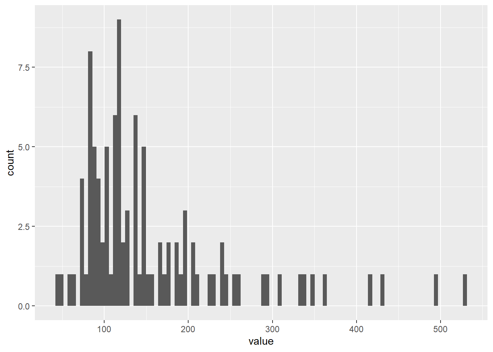
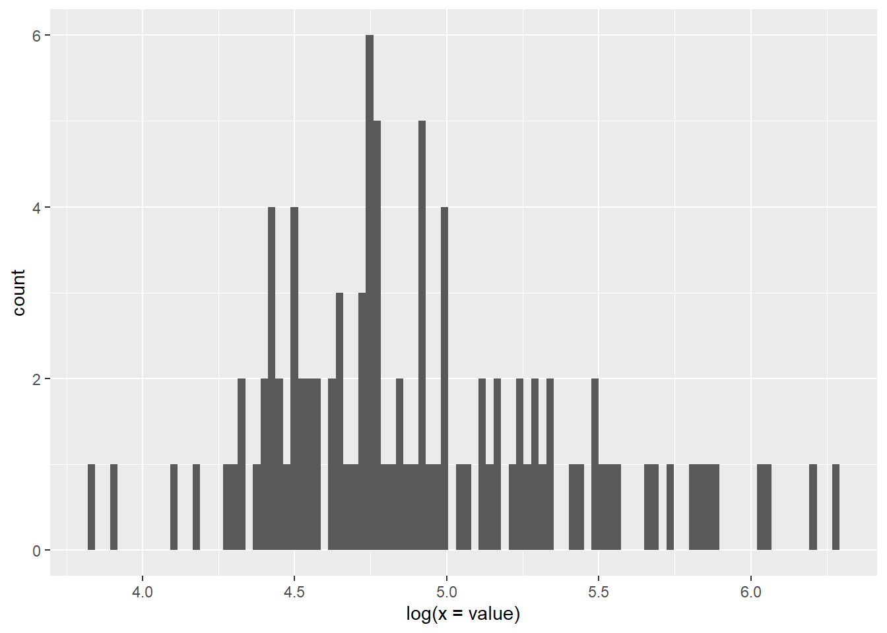
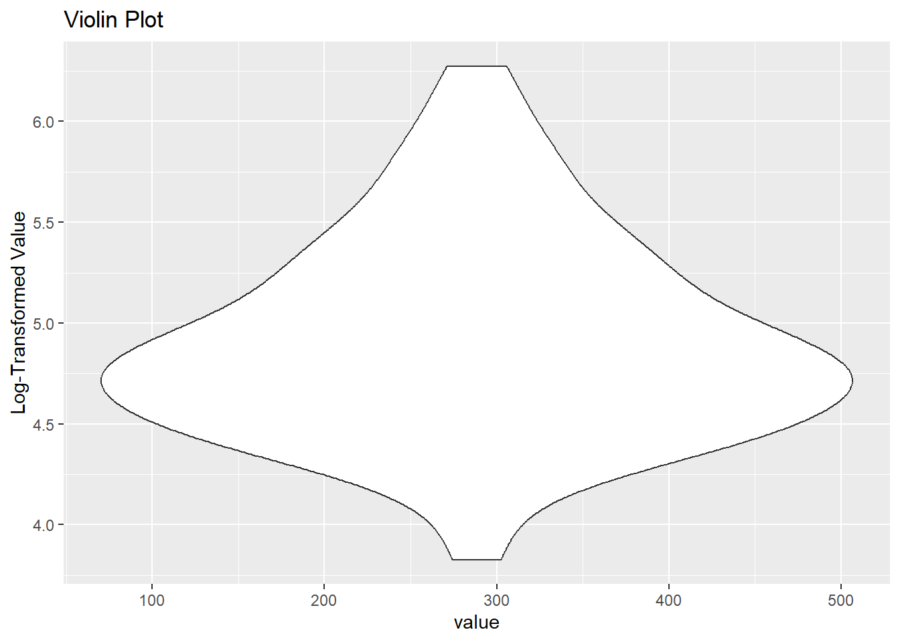

rm(list = ls())Exercise 1B
Clearing Rs memory
We will start by clearing Rs memory
##Aim We want to create an executable HTML document that samples 100 values from a log-normal distribution (see the rlnorm function
##Loading libraries Here we load the necessary libraries
library(ggplot2)Warning: package 'ggplot2' was built under R version 4.2.3library(tidyverse)Warning: package 'tidyverse' was built under R version 4.2.3Warning: package 'tibble' was built under R version 4.2.3Warning: package 'tidyr' was built under R version 4.2.3Warning: package 'readr' was built under R version 4.2.3Warning: package 'purrr' was built under R version 4.2.3Warning: package 'dplyr' was built under R version 4.2.3Warning: package 'stringr' was built under R version 4.2.3Warning: package 'forcats' was built under R version 4.2.3Warning: package 'lubridate' was built under R version 4.2.3── Attaching core tidyverse packages ──────────────────────── tidyverse 2.0.0 ──
✔ dplyr 1.1.1 ✔ readr 2.1.4
✔ forcats 1.0.0 ✔ stringr 1.5.0
✔ lubridate 1.9.2 ✔ tibble 3.2.1
✔ purrr 1.0.1 ✔ tidyr 1.3.0
── Conflicts ────────────────────────────────────────── tidyverse_conflicts() ──
✖ dplyr::filter() masks stats::filter()
✖ dplyr::lag() masks stats::lag()
ℹ Use the conflicted package (<http://conflicted.r-lib.org/>) to force all conflicts to become errorslibrary(palmerpenguins)Warning: package 'palmerpenguins' was built under R version 4.2.3library(quarto)Warning: package 'quarto' was built under R version 4.2.3##creating the data here we create the dataset we will be using
set.seed(1234)
data1 <- rlnorm(n = 100, mean = 5, sd = 0.5)
data=data.frame(value=data1)
head(data1)[1] 81.16362 170.49647 255.24416 45.93150 183.93130 191.14417Plots
In this section we will create the plots requested
Histogram
First the histogram with the linear scale
linearhistogram <- ggplot(data, aes(x=value)) +
geom_histogram(bins = 100)
linearhistogram
##log scale histogram Next the histogram with the logarithmic scale
loghist <- ggplot(data, aes(log(x=value))) +
geom_histogram(bins = 100)
loghist
##Violin plot Here we create a violin plot
data$log_value <- log(data$value)
violoinplot <- ggplot(data, aes(x = value, y = log_value)) +
geom_violin() +
labs(y = "Log-Transformed Value") +
ggtitle("Violin Plot")
violoinplot
##Next comes the statistical analysis Here we will do the statistical analysis and embed it in the text
mean(data1)[1] 157.3211The mean of our distribution is 157.3211142
Standard deviation
Here we will do the statistical analysis and embed it in the text
sd(data1)[1] 94.35381The standard deviation of our distribution is 94.3538062